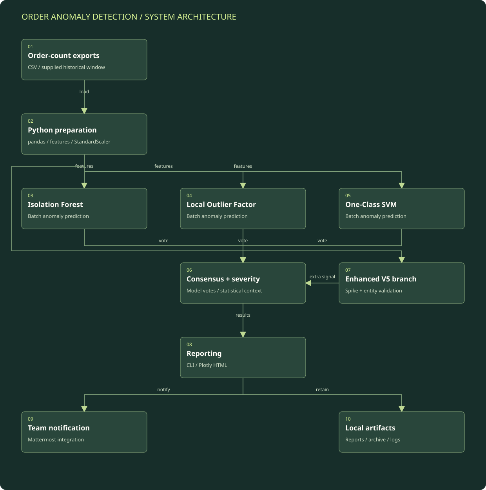

Load and validate the input
The Python entry point selects one or more CSV inputs. It supports summary-shaped values and a time-series preparation path, then normalizes values into an analysis table.
Detailed architecture / Business observability
A Python analysis pipeline that combines statistical features, three unsupervised models, severity scoring, and automated operational reporting.
Component layout and data flow.
Boxes represent logical modules and external systems; they do not imply a separate server for each box. On a narrow screen, scroll the diagram horizontally or open the full-size SVG. The tables below provide a text equivalent.

| Component | Responsibility | Boundary / qualification |
|---|---|---|
| Input and preparation | Reads local exports and constructs the feature matrix. | The supplied input determines history coverage; ingestion is not shown as a live API stream. |
| Detection core | Runs the three model paths and combines their results with severity rules. | Configuration changes and batch composition can change what is flagged. |
| Enhanced V5 path | Adds spike checks and reporting-entity validation. | Documented separately from the earlier ensemble implementation. |
| Reporting and delivery | Creates CLI/HTML output and integrates with Mattermost. | A generated report and a successfully delivered notification are separate operational events. |
| Local retention | Archives processed inputs and manages output/log retention. | Public documentation excludes actual input files and notification destinations. |
The Python entry point selects one or more CSV inputs. It supports summary-shaped values and a time-series preparation path, then normalizes values into an analysis table.
The detector derives deviation, ratio, and variability features from the input and standardizes the feature matrix before fitting the models.
The reviewed ensemble fits and predicts on the prepared batch. Model votes are combined; the enhanced V5 variant also evaluates a separate spike signal and identifies newly observed reporting entities.
Severity rules classify candidates and retain the underlying feature values. Normal observations remain distinguishable from anomalies in the reporting output.
The pipeline produces CLI and HTML reports, attempts configured Mattermost notification, archives the input, and applies file/log retention. The reviewed entry point is batch-oriented; a continuously running stream processor is not assumed.